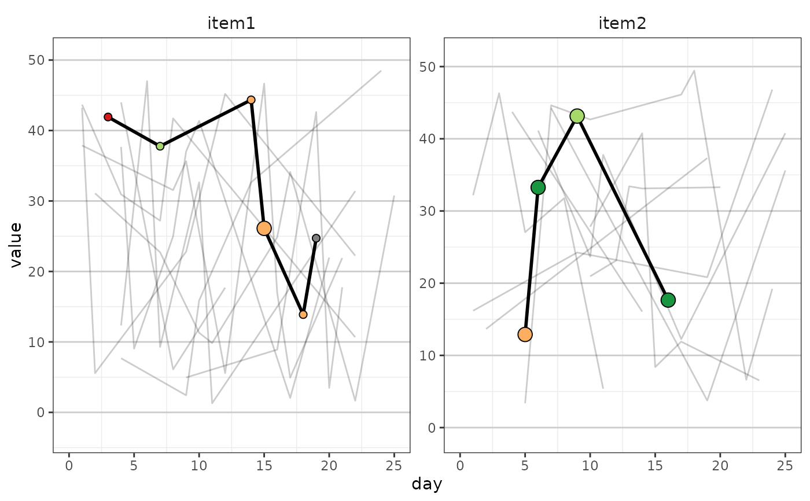

Creates a ggplot2 faceted time series line plot. Can be called within
plotly_figure() to create an interactive figure.
Usage
fig_timeseries(
data,
xval = "day",
id = "subject_id",
id_to_highlight,
color_fill = "significance",
point_size = "reviewed",
label = "text_label",
scale = FALSE,
use_unscaled_limits = FALSE
)Arguments
- data
A data frame containing the data of interest.
- xval
x-value to be used.
- id
Character string. Column containing the unique Patient IDs.
- id_to_highlight
Character vector. Unique Patient ID. Connects the lines in the time series.
- color_fill
Character vector. Column name of the variable to be used for filling color in the figure.
- point_size
character vector. Column in the data frame that controls the point size in the figure.
- label
Character vector. Label to be used for each data point. Will only be visible if the ggplot object is converted to an interactive plot using
plotly::ggplotly(). Seeplotly_figure()- scale
A logical. Whether to us a scaled value (value_scaled) or the raw variable (item_value).
- use_unscaled_limits
If TRUE, limits provided in the data frame will be used. This parameter will be ignored if scaled is set to
TRUE.
Examples
set.seed(2023)
mock_data <- lapply(paste0("Subject", 1:10) , \(x){
data.frame(
subject_id = x,
day = sample(1:25, 10),
item_name = sample(c("item1", "item2"), 10, replace = TRUE),
item_value = runif(10, 0 , 50),
significance = sample(names(col_palette), 10, replace = TRUE),
text_label = "test text",
reviewed = sample(c("Yes", "No"), replace = TRUE)
)
}) |>
dplyr::bind_rows()
fig_timeseries(mock_data, id_to_highlight = "Subject10")
